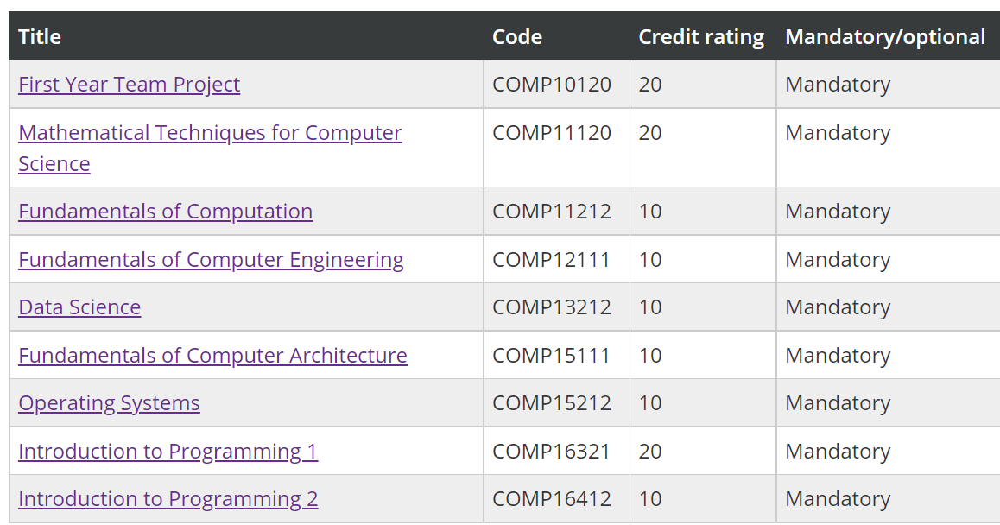

Department
I study Computer Science with Industrial Experience MEng (5 years). I enjoy what we are doing at the university. Even if the first year was online because of COVID, I feel that I learned a lot of new things and we had projects, workshops, labs, which helped me understand better.

If you choose to study Computer Science
or other field, I recommend
to have a look on the University's website.
Computer Science
First Year Courses --- To give you a brief idea

First Year Team Project -> I had a team and we had to
develop a web app. We could use our imagination to create
something new. At the same time we studied web programming
languages, both front-end
and back-end, such as HTML, CSS, JavaScript, PHP, SQL.
We didn't have to use exactly the above languages, but we could
implement our app using others too, as NodeJS, Angular.
Programming -> In first semester we studied Python and in second semester Java
Exams for First Year:
First Semester: 4 exams
Second Semester: 5 exams
For questions: phoenix.pwebsite@gmail.com